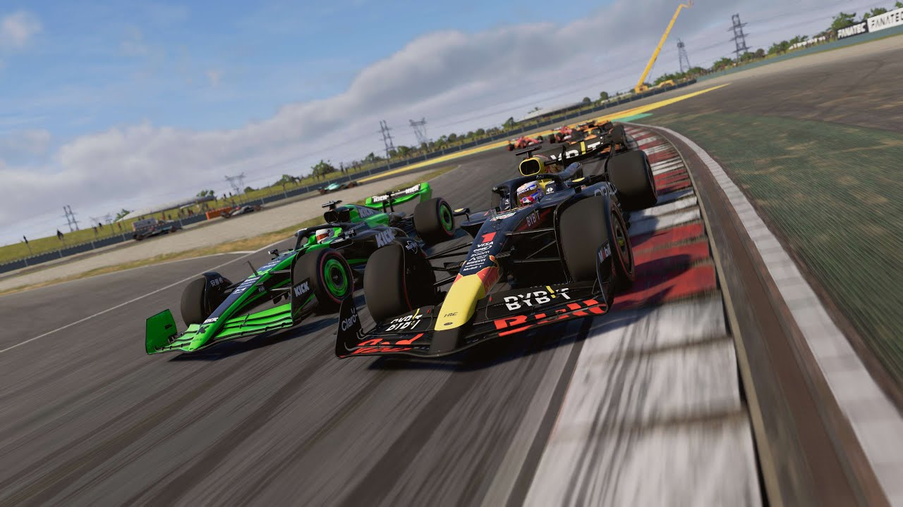
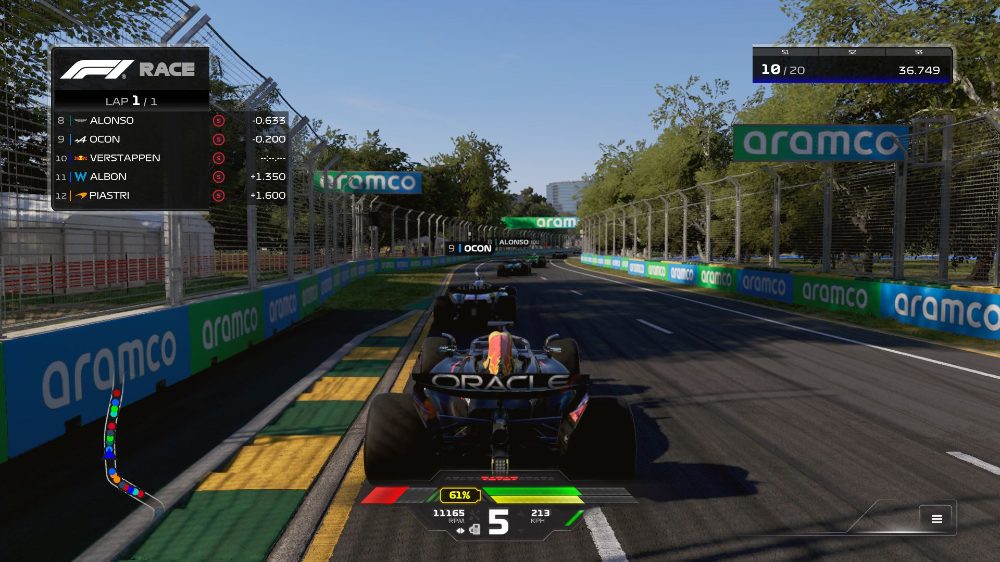

Gamer.nl: "F1 24 biedt een ongeëvenaarde race-ervaring met gedetailleerde graphics en realistische physics."
F1 24
Informatie
Synopsis: Beleef de ultieme spanning van de Formule 1 in F1 24, met de nieuwste seizoenen, raceteams en circuits. Kruip achter het stuur van iconische auto's, beheer je team en strategie, en ervaar realistische physics en dynamisch weer. Strijd om het kampioenschap in zowel singleplayer als multiplayer modi, en geniet van een ongeëvenaarde race-ervaring.
Genre: Race
Singleplayer/Multiplayer: Beide
Waardering (Metacritic): 85
Uitgever: Codemasters / EA Sports
Uitgavedatum: 31-05-2024
Game Screenshots
 Minimale Systeemeisen
- OS: Windows 10 64-bit Version 21H1
- Processor: Intel Core i3-2130 | Core i5-9600k (VR) or AMD FX 4300 | Ryzen 5 2600X (VR)
- Geheugen: 8 GB RAM
- Grafische kaart: NVIDIA GTX 1060
- DirectX: Versie 12
- Opslag: 100 GB beschikbaar
Recensies
Gamespot: "Een uitstekende toevoeging aan de F1-serie met veel nieuwe functies."
IGN: "Een must-have voor elke Formule 1-fan, hoewel het niet veel nieuws brengt voor veteranen."